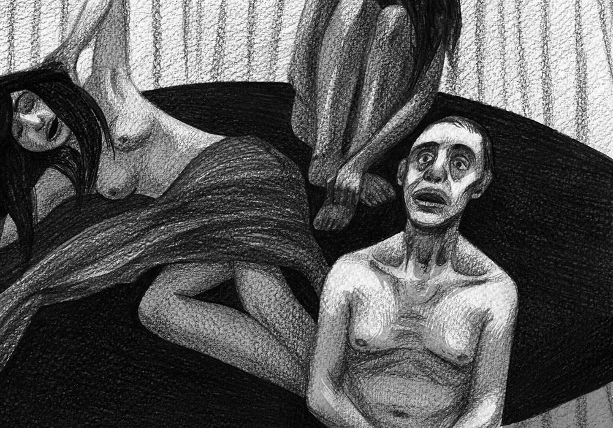
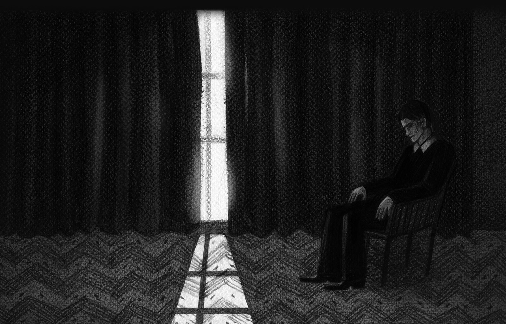

Работы Броха, посвящённые психологии политики, появлялись в основном в период его военной эмиграции в Британию и Соединенные Штаты. Однако его размышления о причинах массового сумасшествия при тоталитарных режимах или про опустошённые символы демократии остаются актуальными и сегодня.
Книга австрийского эссеиста и писателя Германа Броха «Теория массового безумия» (Massenwahntheorie. Beitraege zu einer Psychologie der Politik, 1979) заслуживает внимания по ряду причин. Это не классическая монография, а сборник эссе и отдельных исследований, которые должны были подкреплять концепцию массового сумасшествия — широкого проекта, над которым Брох работал с 1936 по 1946 год. Находясь под влиянием исторических событий, в 1937 году Брох предложил основать исследовательский институт, чтобы анализировать процессы, которые ведут к тому, что «человек находится под угрозой массового помешательства духа». Такие общественные психопатологические процессы требовалось исследовать не только с точки зрения психологии, но и на фоне культурных, социальных и экономических факторов. Целью проекта должно было стать понимание критических процессов в обществе, находящемся на пути к тоталитаризму, и способность эффективно предотвращать такие тенденции. Прибавим, что импульсом к работе над темой массового безумия мог быть и личный опыт автора, который жил при нацистском режиме. Лишь вмешательство Джеймса Джойса и Альберта Эйнштейна позволило Броху после аншлюса покинуть Австрию, что ему — как автору еврейского происхождения — скорее всего спасло жизнь.
Сходить с ума в полусне
В своих рассуждениях Брох отталкивается от работ Зигмунда Фрейда, Карла Густава Юнга и Густава Ле Бона, но от их теорий психологии масс он перемещает внимание на более тонкое понятие человеческого состояния полусна. Это состояние Брох считает первичной предпосылкой для массового безумия как феномена, не относящегося исключительно к первой половине ХХ века. Тезисы теории массового сумасшествия артикулируемы в связи с коммунистическим и, прежде всего, нацистским террором. При детальном анализе исторических предпосылок возникновения массового сумасшествия или террора предпринимаются экскурсы в более отдалённые исторические эпохи. Таким образом пробуждение демонических, деструктивных сил всеобщей психопатии понимается как периодически возвращающийся феномен. При этом используется понятие метафизического ужаса, в которое включено всё то, что находится вне Я, превосходит Я или является для Я не поддающимся пониманию: «Я (…) знает о метафизическом одиночестве своего умирания». Для преодоления этого ужаса Я нуждается в моменте экстаза, расширения, и, согласно Броху, это преодоление может происходить по двум линиям. Первая характеризуется обогащением сферы иррационального в значении духовного, культурного или религиозного экстаза. Я распространяется на мир, оно обогащено миром в смысле высказывания «Я есть мир». Вторая линия получает свой ритм от иррациональных целей, которые предстают не только как рациональные, но и как необходимые. Результатом является возвращение к не-культурному, к архаично-инфантильной форме существования, экстаз которой заключается во взрыве потребностей, в подчинении себе другого в духе лозунга «Я владею миром».
Необходимость вождя
Состояние ужаса Брох связывает с паникой, моментом утраты рационального коррелятаФилос. понятие, «предмет мысли» — Прим. перев. и предпосылками массового безумия, когда иррациональные модели поведения превращаются в рациональные, логически обоснованные и исторически необходимые. Таким образом, возникающая паника является состоянием, для редукцииФилос. понятие, «заключение в скобки», исключение чего-либо из сферы коррелятов. — Прим. перев. которого недостаточно подавления ужаса, поскольку опыт переживания паники требует нового сотворения мира, нового образования ценностей и безопасных рамок существования. Чувство метафизического ужаса, согласно Броху, — чрезвычайно интимное переживание, и оно может стать действительностью, которую разделяет и чувствует общество, импульсом к распаду рационального восприятия мира и к погружению в состояние массового сумасшествия. В итоге появляется потребность в вожде, который способен вывести общество из панического состояния и предложить «возмещение всего нанесённого ущерба». Данный тезис Броха можно применить к измученному пролетариату дореволюционной России или к Веймарской республике, разрываемой хозяйственным кризисом; но существенно здесь не само исправление положения, а — как подчеркивает автор — специфический вид эмоционального удовлетворения садистских инстинктов. Для того, чтобы превратить состояние паники в состояние экстаза, это удовлетворение должно быть всепроникающим и тотальным (именно в связи с этим феноменом необходимо рассматривать мифы всемирной победы пролетариата, нацистской тотальной войны и т.п.).

Становление массового сумасшествия Брох видит как сложно структурированную, хоть и более или менее неизменную последовательность нескольких отдельных событий или моментов в ходе истории, на протяжении которых предыдущая система заменяется новой, причём ценности старой системы постепенно оказываются за границами приемлемого. Они вытесняются в первую очередь на уровне идейного, символического, чтобы стать табуированными и в законодательной сфере. Так иррациональное, будучи освящено законом, вступает в сферу рационального. В качестве примера Брох приводит демонизацию евреев, которая была утверждена НюрнбергскимиПринятые Адольфом Гитлером в 1935 году в Нюрнберге расистские законы («О гражданине Рейха» и «Об охране германской крови и германской чести»), которые фактически лишали евреев и цыган немецкого гражданства. законами; похожую параллель он находит и в схематическом изображении мира коммунистического пролетариата, и в процессах над ведьмами, которые были включены в логику христианской догматики. Одновременно в ходе замещения старой системы новой происходит преобразование понятий нормального и не-нормального, морального и не-морального, здорового и не-здорового. Поэтому в своих социально-психологических экскурсах Брох касается проблематики функционирования групп, коллективов и больших социальных образований, а также проблематики определения индивидуальности при необходимости идентифицировать себя с общественной целостностью.
Демократия в фазе усталости
Путём крайне подробного анализа психических моделей общества Брох приходит к определению ключевых предпосылок формирования нацистского и коммунистического террора, которым противопоставляет идею демократического общественного устройства. Возможность избежания массового безумия Брох видит, с одной стороны, в усилении демократических принципов и, с другой стороны, в последовательном подавлении экстаза от победы тоталитарной системы. Главная предпосылка здесь — способность вовремя распознать симптомы массового сумасшествия. Автор обращает внимание на то, что демократия — в отличие от нацизма или коммунизма — не способна презентовать себя как «замену религии», потому что её жемчужиной являются практико-рациональные основы, и поэтому её идеология становится «не-идеологией чистой муниципальности». Демократическое сознание становится государственным сознанием, но при этом снижается символический объём демократии, и картина мира становится расфокусированной и неясной, тогда как тоталитаризм сплочает людей своей однозначностью, ощутимой иерархией ценностей и нормативной прозрачностью вселенной. Идеология тоталитаризма предлагает (со ссылкой на Фрейда) «достоверное желание фантазии», надежду, поддерживаемую теоремами. Этими качествами демократия в фазе усталости не обладает.

Теория массового сумасшествия Германа Броха — это уникальный проект, отдельные решения которого могут спустя время казаться немного наивными и слишком широко понятыми. Но нельзя не заметить, что она содержит ряд более чем точных замечаний касательно анализа демократии и её символической опустошённости, касательно связи индивидуального самопереживания с психологией толпы или феномена порабощения, который существует как в марксистском понятии экономики, так и в капиталистическом свободном рынке. К этому можно добавить, что некоторые тезисы Броха на фоне современных мировых тенденций зловеще актуальны.